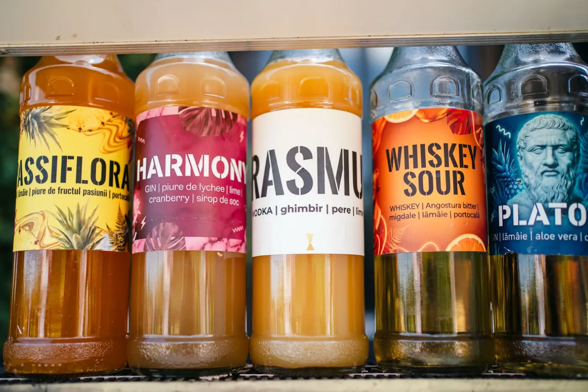
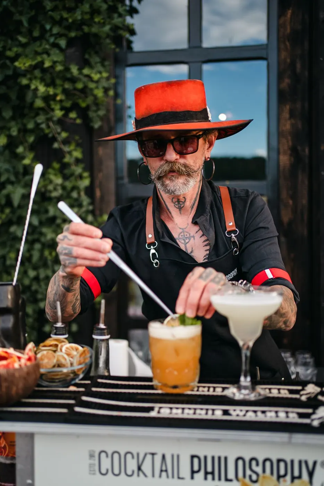

Bar de cocktailuri pentru nunți · Sibiu
Voi dansați. Noi ne ocupăm de bar.
Bar mobil, cocktailuri create de noi, pahare de sticlă și barmani care rămân până la ultimul dans. Și alegeți cum plătiți: preț fix pe invitat sau servicii plus consumație.
Ce primiți la nuntă
Voi aveți destule de organizat. Barul nu mai e una dintre ele.
Două feluri de a plăti
Preț fix pe invitat, cu băutură nelimitată, sau servicii plus consumația reală. Alegeți voi.
Fără surprize
La prețul pe invitat, totalul nu poate crește. La servicii + consumație, plătiți doar ce s-a băut.
Pahare de sticlă
Nu de plastic. Plus meniuri pe mese, ca invitații să știe ce să ceară.
Barmani până la final
Echipa stă de la primul pahar până la ultimul dans, nu până se termină o tură.
Fără griji de logistică
Instrumentele, transportul, taxa de vase și toată logistica sunt incluse, în ambele variante.
Plătiți după nuntă
Avans 100 €, restul pe factură, după petrecere. Știm cât costă o nuntă.
Două variante
Cât costă barul la nunta voastră
Alegeți cum vreți să plătiți: preț fix pe invitat, cu băutură nelimitată, sau servicii plus consumație.
All you can drink · preț fix pe invitat
Băutură nelimitată din meniul ales. Știți totalul de la început și nu poate crește. Cu cât sunteți mai mulți, cu atât scade prețul pe invitat; staff-ul și copiii nu se numără.
Servicii + consumație
Plătiți barmanii la preț fix, iar băutura după cât se consumă, la prețurile BetaPlus, cu 8% reducere la bazele alcoolice. Potrivit când credeți că la nuntă nu se va bea foarte mult.
- Câți barmani: unul până la 100 de invitați, doi între 100 și 250, trei peste 250
- Incluse: barmanii, toate sculele, taxa de vase a locației și toată logistica
- Consumația se calculează la final, pe fiecare sticlă: din cele începute plătiți doar cât s-a turnat
Plătiți fix cât se consumă. La final măsurăm fiecare sticlă, de alcool și de sirop. Din sticlele începute plătiți doar cât s-a turnat: dacă din 10 sticle de rom s-au băut 8 și jumătate, plătiți 8,5, nu 9. Sticlele rămase, pline sau începute, ne întoarcem cu ele la depozit.
Băutura o aducem noi, prin furnizorul nostru, ca să putem răspunde de calitatea fiecărui pahar. Dacă preferați să asigurați băutura din altă sursă, o servim cu drag, cu un supliment de 30% la tariful serviciilor.
Detalii despre varianta 2Prețuri orientative. Oferta finală o primiți după ce verificăm data și locația. Avans 100 € în ambele variante.
Meniul nunții
Alegeți din Meniul 2026 sau îl facem pe gustul vostru
Creațiile casei cu nume de filosofi, clasicele pe care le știe toată lumea și cocktailuri fără alcool la fel de bune, pentru cei care conduc sau pentru bunici.





V-ați încadrat de minune în tematica nunții noastre! Mulțumim din suflet!
De la prima întrebare la ultimul pahar
Ne scrieți data și locația
Pe WhatsApp, telefon sau din formularul de mai jos.
Rezervăm data
Verificăm disponibilitatea, primiți oferta, iar data e a voastră cu un avans de 100 €.
Alegeți meniul
Din Meniul 2026 sau cu cocktailuri pe gustul vostru.
Ne vedeți la nuntă
Venim cu tot, iar factura vine după petrecere, la termen.
Ce ne întreabă mirii
Se poate să crească prețul în seara nunții?
La prețul fix pe invitat (All you can drink), nu: prețul final nu poate crește față de cotație, oricât s-ar bea.
Ce variantă ni se potrivește?
Dacă vreți să știți totalul din prima zi și să nu vă gândiți cât se bea, alegeți prețul fix pe invitat. Dacă invitații voștri nu beau mult, servicii + consumație poate ieși mai avantajos. Vă ajutăm noi să alegeți când vorbim.
Ce se întâmplă cu sticlele începute?
La servicii + consumație plătiți fix cât s-a consumat. Măsurăm fiecare sticlă, de alcool și de sirop, iar din cele începute plătiți doar cât s-a turnat. Dacă din 10 sticle de rom s-au băut 8 și jumătate, plătiți 8,5, nu 9. Sticlele rămase, pline sau începute, ne întoarcem cu ele la depozit.
Cine se numără la invitați?
Doar invitații adulți. Staff-ul și copiii nu intră în calcul.
Ce se întâmplă dacă se sparg pahare?
Nimic, paharele sparte sunt deja incluse în preț, la fel ca transportul și vasele.
Câți barmani vin la nuntă?
Un barman până la 100 de invitați, doi între 100 și 250 de invitați și trei peste 250.
Cum se plătește?
Avans 100 € la rezervare, iar restul pe factură, după nuntă.
Cu cât timp înainte să rezervăm?
De obicei cu 6–12 luni înainte. Weekendurile din sezon se ocupă repede, așa că merită să ne scrieți imediat ce aveți data și locația.
Veniți și la nunți în afara Sibiului?
Da, venim oriunde, fără restricții.
De cât spațiu are nevoie barul la locație?
De aproximativ 2,5 × 2,5 metri. Restul îl aducem noi.
Verificăm data nunții?
Scrieți-ne data, locația și câți invitați aveți. Vă răspundem cu oferta potrivită.
Vă răspunde un om din echipă, nu un robot.
0743 785 655